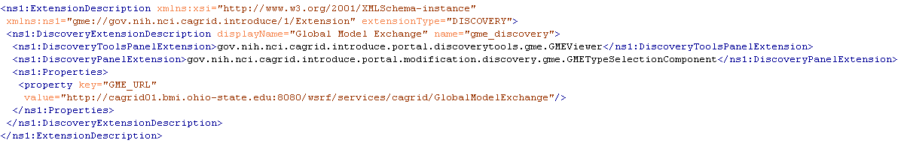

|  |
Figure 14. Sample Discovery Tools Extension.
These extensions are Introduce GDE components that will be available at the service modification step. These components are intended to be able to provide custom data type discovery for the service developer. The custom data type discovery component must allow the developer to browse types and chose to use those types in the developed service. This means that the data type discovery extension will have to be able to copy the schemas which represent the data types down to the service’s schema directory and produce a NamespaceType object for tpe namespace of each separate data type. This enables the grid service to utilize the schemas for describing the data types which are used in the WSDL messages traveling in and out of the created service.
In addition to default plug-ins, domain specific plug-ins can be installed in Introduce. For example, in the caBIG environment, a caDSR discovery plug-in is provided with Introduce. This plug-in allows service develoFers to locate and use data types registered in the cancer Data Standards Repository (caDSR), which is a curated repository of common data elements used in caBIG.